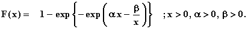

![[flexibleweibull_ex0]](flexibleweibull_ex0.bmp) Flexible Weibull Model
Flexible Weibull Model

model
{
for( i in 1 : N )
{
x[i] ~ dflex.weib(alpha, beta)
}
# Prior distributions of the model parameters
alpha ~ dgamma(0.001, 0.001)
beta ~ dgamma(0.001, 0.001)
}
The data set is taken from Bebbington et al.(2007).
Bebbington, M., Lai, C.D. and Zitikis, R. (2007) A flexible Weibull extension. Reliability Engineering and System Safety , 92, 719-726.
The MLE's are alpha = 0.0207 beta = 0.25875
Data ( click to open )
Inits for chain 1 Inits for chain 2 ( click to open )
Results